Diseños Factoriales \(2^k\)
Introducción
La familia de diseños completos \(2^k\) son aquellos que son de \(k\) factores con dos niveles, estos diseños son muy útiles cuando se tienen \(2 \leq k \leq 5\) factores, lo que significa que significa evaluar entre 4 y 32 tratamientos, esta cantidad es manejable a nivel experimental y de mucho impacto en la industria y en la investigación. En los diseños factoriales evaluamos los efectos de los efectos fijos con su interacción, en este caso evaluaremos los diseños con dos niveles y \(k\) tratamientos, el más simple es el diseño \(2^2\).
Factorial \(2^2\)
Con este diseño se estudia el efecto de dos factores con dos niveles en cada uno, cada réplica de este diseño consiste un arreglo \(2 \times 2=4\) combinaciones o tratamientos. Las notaciones de los niveles de los factores pueden ser a partir de su cantidad o denotando los niveles mayor o menor de la siguiente forma: \(+1\) para el nivel mayor y \(-1\) para el nivel menor, esta notación es útil a la hora de hacer los cálculos para ajustar por mínimos cuadrados un modelo de regresión a los datos; es la notación que usa el software Minitab, y también la recibe R.
La notación de signos \(+\), \(–\) es muy práctica para escribir las matrices de diseño; esta notación, combinada con la de Yates permite representar y calcular fácilmente los efectos de interés. La notación con letras \(A^+\), \(A^–\) se utiliza para escribir, al final del análisis del experimento, el mejor punto o tratamiento ganador que se ha encontrado.
La notación de Yates \([(1), a, b, ab]\) tiene un significado diferente a las demás: con ella se representa el total o la suma de las observaciones en cada tratamiento, más que al tratamiento mismo. Hay que observar que la lógica de la notación de Yates es la siguiente: si una letra minúscula está presente, entonces el factor correspondiente se encuentra en su nivel alto; si está ausente, el factor está en su nivel bajo; por ejemplo, \(ab\) se refiere al tratamiento en el que los factores \(A\) y \(B\) están en su nivel alto.
| A | B | A | B | A | B | A | B | A | B | A | B | Yates | |
|---|---|---|---|---|---|---|---|---|---|---|---|---|---|
| Trat 1 | bajo | bajo | \(A_1\) | \(B_1\) | \(A^-\) | \(B^-\) | \(-\) | \(-\) | 0 | 0 | -1 | -1 | (1) |
| Trat 2 | alto | bajo | \(A_2\) | \(B_1\) | \(A^+\) | \(B^-\) | \(+\) | \(-\) | 1 | 0 | 1 | -1 | a |
| Trat 3 | bajo | alto | \(A_1\) | \(B_2\) | \(A^-\) | \(B^+\) | \(-\) | \(+\) | 0 | 1 | -1 | 1 | b |
| Trat 4 | alto | alto | \(A_2\) | \(B_2\) | \(A^+\) | \(B^+\) | \(+\) | \(+\) | 1 | 1 | 1 | 1 | ab |
El diseño factorial \(2^2\) se representa de manera geométrica por los vértices de un cuadrado. Cada vértice representa un punto de diseño o tratamiento. El área limitada por este cuadrado se conoce como región experimental y, en principio, las conclusiones que se obtengan del experimento sólo tienen validez sobre esta región.

Cálculo de los efectos
En este diseño hay tres efectos de interés: los dos efectos principales (A y B) y el efecto de interacción (AB). Con el uso de la notación de Yates podemos ver que si cada tratamiento se corre \(n\) veces, entonces la media de \(Y\) en el nivel alto de \(A\) es \((a + ab)/2n\) y en el nivel bajo es \((b + (1))/2n\).
\[\text{Efecto A}=\frac{1}{2n}[a+ab-b-(1)]=\frac{[a+ab]}{2n}-\frac{[b+(1)]}{2n}\]
\[\text{Efecto B}=\frac{1}{2n}[b+ab-a-(1)]=\frac{[b+ab]}{2n}-\frac{[a+(1)]}{2n}\]
En sentido geométrico, el efecto \(A\) equivale a promediar los datos del lado derecho del cuadrado de la figura anterior y restarles el promedio de los datos del lado izquierdo; mientras que para el efecto \(B\) se promedian los datos del lado de arriba y se le resta la media de los datos del lado de abajo.
El efecto de interacción entre los factores \(A\) y \(B\) está dado por la diferencia entre el efecto de \(A\) en el nivel alto de \(B\) y el efecto de \(A\) en el nivel bajo de \(B\), esto es,
\[\text{Efecto AB}=\frac{1}{2n}[ab+(1)-a-b]=\frac{[ab-b]}{2n}-\frac{[a-(1)]}{2n}\]ANOVA
Aunque los efectos calculados con los datos muestren diferencias, esto no implica que sean estadísticamente diferentes de cero. Para afirmar que los efectos son significativos y que la diferencia entre ellos también lo sea, se requiere ajustar el modelo mediante la ANOVA.
Para construir el ANOVA necesitamos descomponer las suma de cuadrados de los factores, al tratarse de un diseño \(2^k\) es necesario establecer los contrastes:
\[\text{Contraste }A=[a+ab-b-(1)]\] \[\text{Contraste }B=[b+ab-a-(1)]\] \[\text{Contraste }AB=[ab+(1)-a-b]\]
Son contrastes por el hecho de que son combinaciones lineales donde los coeficientes suman cero \((1 + 1 – 1 – 1 = 0)\). Una vez obtenido el contraste, el efecto correspondiente se obtiene dividiéndolo entre la constante que lo convierta en una diferencia de medias; este número es la mitad de las observaciones hechas en el experimento. Por ejemplo, en el factoria1 \(2^k\) con \(n\) réplicas los contrastes se dividen por \(n2^{(k – l)}\) para estimar los efectos; en particular para el diseño \(2^2\) con \(n\) réplicas se divide por \(n2^{(2 – 1)} = 2n\).
Una manera práctica de establecer los contrastes de cualquier efecto, sea principal o de interacción en el diseño factorial \(2^k\) es mediante el auxilio de una tabla de signos.
| \(A\) | \(B\) | \(AB\) | \(\text{Yates}\) |
|---|---|---|---|
| \(-\) | \(-\) | \(+\) | \((1)\) |
| \(+\) | \(-\) | \(-\) | \(a\) |
| \(-\) | \(+\) | \(-\) | \(b)\) |
| \(+\) | \(+\) | \(+\) | \(ab\) |
Una vez obtenidos los contrastes se procede a estimar los efectos, dividiendo éstos por la constante que los convierte en diferencias de medias. Se tienen entonces las siguientes hipótesis:
\[H_0: \text{Efecto }A = 0 \quad vs \quad H_a: \text{Efecto }A \neq 0\\ H_0: \text{Efecto }B = 0 \quad vs \quad H_a: \text{Efecto }B \neq 0\\ H_0: \text{Efecto }AB = 0 \quad vs \quad H_a: \text{Efecto }AB \neq 0\]
Las sumas de cuadrados se calcula dividiendo los contrastes por la constante, en particular, el diseño factorial \(2^2\) que está constante es \(2n\).
\[SS_A=\frac{[a+ab-b-(1)]}{n2^2}\] \[SS_B=\frac{[b+ab-a-(1)]}{n2^2}\] \[SS_{AB}=\frac{[ab+(1)-a-b]}{n2^2}\]
donde cada una de ellas tiene sólo un grado de libertad, debido a que cada factor tiene únicamente dos niveles. La suma de cuadrados totales se calcula:
\[SS_T=\sum_{i=1}^2\sum_{j=1}^2\sum_{l=1}^2 Y_{ijl}^2-\frac{Y_{...}^2}{n2^2}\]
Y la suma de cuadrados del error se calcula como:
\[SS_E=SS_T-SS_A-SS_B-SS_{AB}\]
Así la tabla ANOVA es de la forma:
| Fuente de Variación | SS | gl | MS | F | valor-p |
|---|---|---|---|---|---|
| A | \(SS_A\) | \(1\) | \(MS_A\) | \(F_0=\frac{MS_A}{MSE}\) | \(P(F>F_0)\) |
| B | \(SS_B\) | \(1\) | \(MS_B\) | \(F_0=\frac{MS_B}{MSE}\) | \(P(F>F_0)\) |
| AB | \(SS_{AB}\) | \(1\) | \(MS_{AB}\) | \(F_0=\frac{MS_{AB}}{MSE}\) | \(P(F>F_0)\) |
| Error | \(SS_E\) | \(4(n-1)\) | \(MSE=\frac{SS_E}{4(n-1)}\) | ||
| Total | \(SS_T\) | \(n2^2-1\) |
Una vez se construye la tabla de ANOVA se verifican los supuestos del modelos a través de los residuales o errores aleatorios, similar a los diseños de un solo factor, entonces hay que compdasrobar:
- Normalidad
- Independencia
- Homocesdasticidad
Con los supuestos del modelos validados, se procede a realizar las pruebas post-hoc si se desea inferir sobre los niveles de los tratamientos del modelo. Se pueden utilizar los métodos:
- Comparaciones de diferencia mínima significativa (LSD)
- Método Tukey HSD
- Método Duncan
- Método Dunnet para fijar un nivel como un control
Factorial \(2^k\)
En términos generales los diseños \(2^k\) son aquellos que tienen \(k\) factores con dos niveles. En este sentido, para analizar los modelos es necesario conocer los efectos individuales, las interacciones dobles hasta las de orden \(k\).
La tabla ANOVA se extiende de acuerdo al número de factores que se vayan a analizar, y el número de réplicas va ser determinante para tener los suficientes grados de libertad para la suma cuadrática del error.
Las \(k\) columnas y \(2^k\) renglones que componen la matriz para este diseño, considerando una réplica, se construyen de la si guiente manera: en la primera columna, que corresponde a los niveles del factor \(A\), se alternan signos \(+\) y \(–\), empezando con \(–\) hasta llegar a los \(2^k\) renglones; en la segunda columna se alternan dos signos menos con dos signos más; en la tercera, se alternan cuatro signos menos y cuatro signos más, y así sucesivamente hasta la k-ésima columna compuesta por \(2^{k–1}\) signos \(–\), se guidos de \(2^{k–1}\) signos \(+\).
Con el diseño factorial completo \(2^k\) se pueden estudiar en total los \(2^{k–1}\) efectos siguientes:
\[\begin{align*} {k \choose 1} &=k,\,\text{Efectos principales}\\\\ {k \choose 2} &=\frac{k(k-1)}{2},\,\text{Interacciones dobles}\\\\ {k \choose 3} &=\frac{k(k-1)(k-2)}{6},\,\text{Interacciones triples}\\\\ \vdots\\\\ {k \choose k} &=1,\,\text{Interacciones de los k factores}\\\\ \end{align*}\]
Ejemplo
| T1 | T2 | T3 | resp |
|---|---|---|---|
| 1 | 1 | -1 | 0.000 |
| 1 | -1 | 1 | 0.000 |
| -1 | -1 | 1 | 0.020 |
| 1 | -1 | -1 | 0.012 |
| -1 | 1 | 1 | 0.016 |
| -1 | -1 | 1 | 0.020 |
| -1 | 1 | -1 | 0.036 |
| 1 | 1 | -1 | 0.000 |
| -1 | 1 | 1 | 0.008 |
| 1 | 1 | 1 | 0.004 |
| -1 | -1 | -1 | 0.040 |
| 1 | 1 | 1 | 0.004 |
| -1 | 1 | -1 | 0.028 |
| -1 | -1 | -1 | 0.032 |
| 1 | -1 | 1 | 0.016 |
| 1 | -1 | -1 | 0.008 |
Para realizar el análisis estadístico de este diseño factorial (\(2^3\)), los pasos a seguir son los siguientes:
- Cargar/Construir la base de datos con la información de interés.
- Realizar un análisis descriptivo de la información.
- Ajustar el modelo a través del ANOVA.
- Validar los supuestos del modelo.
- Realizar las pruebas post-hoc.
Necesitamos las siguientes librerías.
# Para gráficos con estilo
require(ggplot2)
# Para manejar bases de datos
require(dplyr)
# Para construir los qq-plots
require(car)
# Para las pruebas de normalidad
require(nortest)
# Para evaluar las interacciones
require(phia)
# Para los gráficos Predictivo y Pareto
require(FrF2)
require(pid)
# Para las pruebas post-hoc
require(agricolae)
require(multcomp)El primer paso es cargar o construir la base de datos, esto puede hacerse en excel y luego importarlas a R o se puede construir la base de datos de la siguiente forma:
datos <- data.frame(T1=factor(c(1,1,-1,1,
-1,-1,-1,1,
-1,1,-1,1,
-1,-1,1,1)),
T2=factor(c(1,-1,-1,-1,
1,-1,1,1,
1,1,-1,1,
1,-1,-1,-1)),
T3=factor(c(-1,1,1,-1,
1,1,-1,-1,
1,1,-1,1,
-1,-1,1,-1)),
resp=c(0,0,0.02,0.012,
0.016,0.02,0.036,0,
0.008,0.004,0.04,0.004,
0.028,0.032,0.016,0.008))Análisis descriptivo
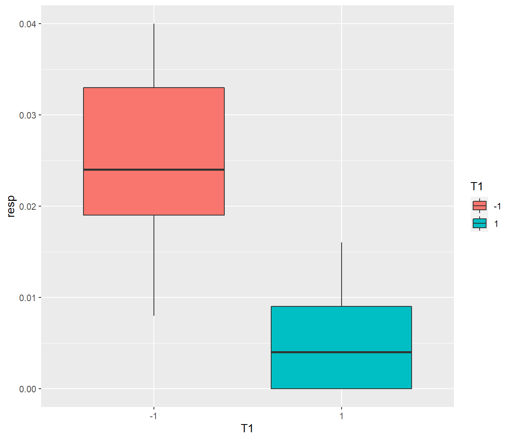
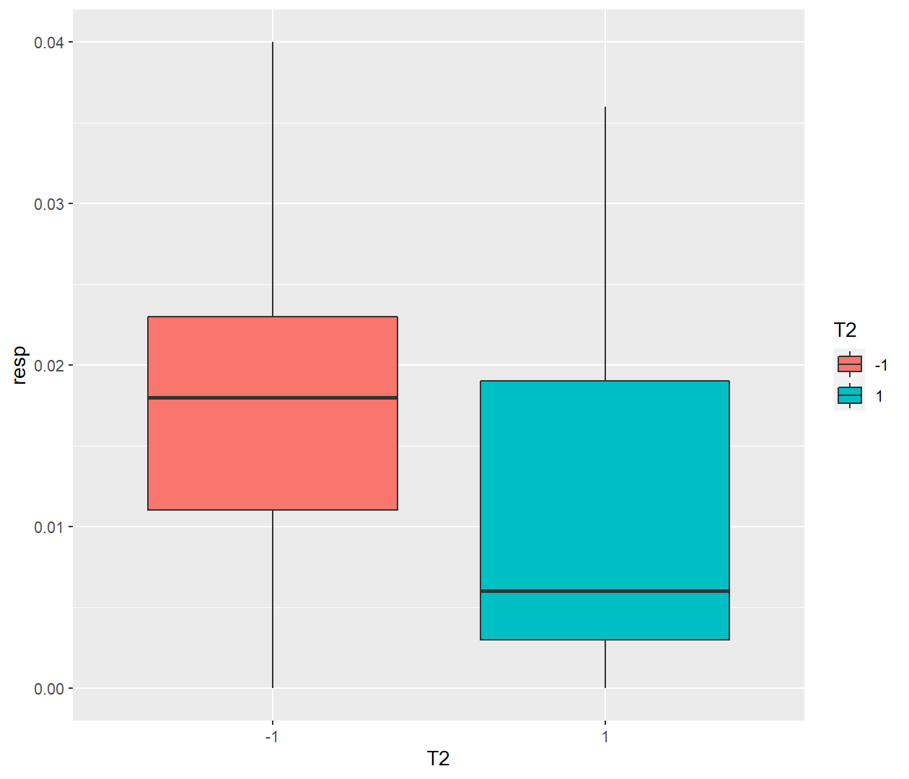
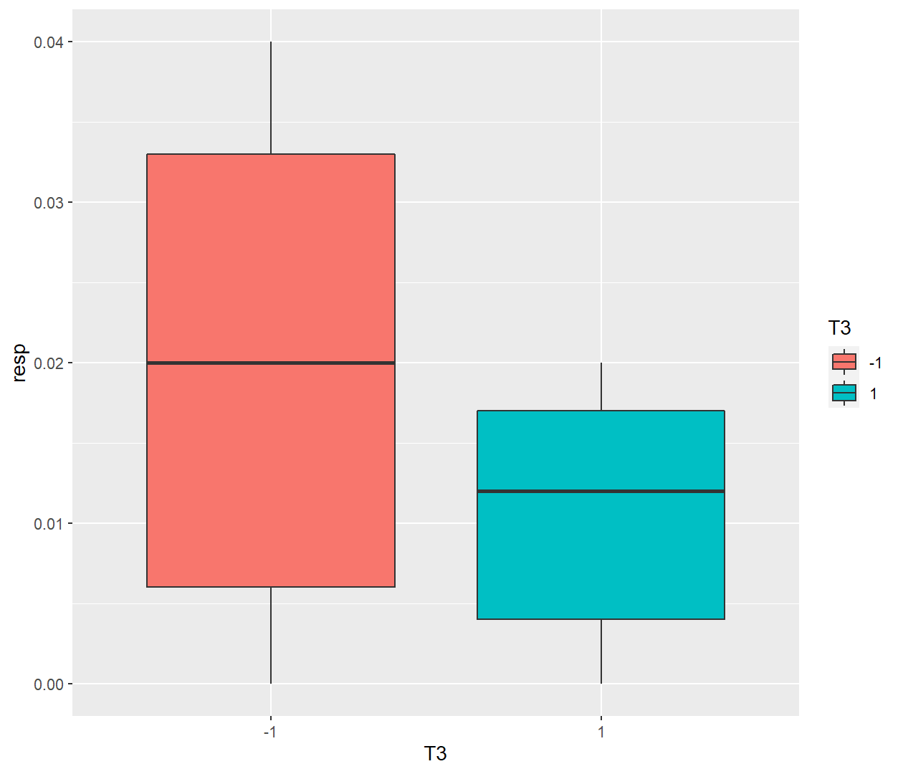
datos %>% group_by(T1,T2) %>%
summarise(y = mean(resp)) %>%
ggplot(aes(x=T1,y=y,
group=T2,colour=T2))+
geom_point(size=2)+geom_line(lwd=1)+
ggtitle("Gráfico de Interacción T1:T2")+theme_bw()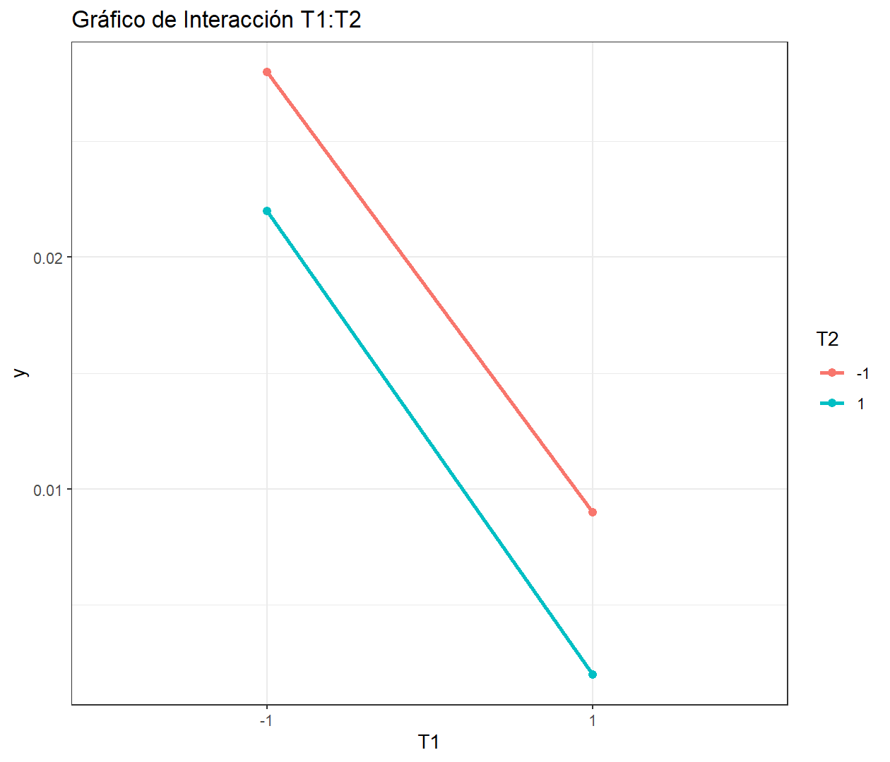
datos %>% group_by(T1,T3) %>%
summarise(y = mean(resp)) %>%
ggplot(aes(x=T1,y=y,
group=T3,colour=T3))+
geom_point(size=2)+geom_line(lwd=1)+
ggtitle("Gráfico de Interacción T1:T3")+theme_bw()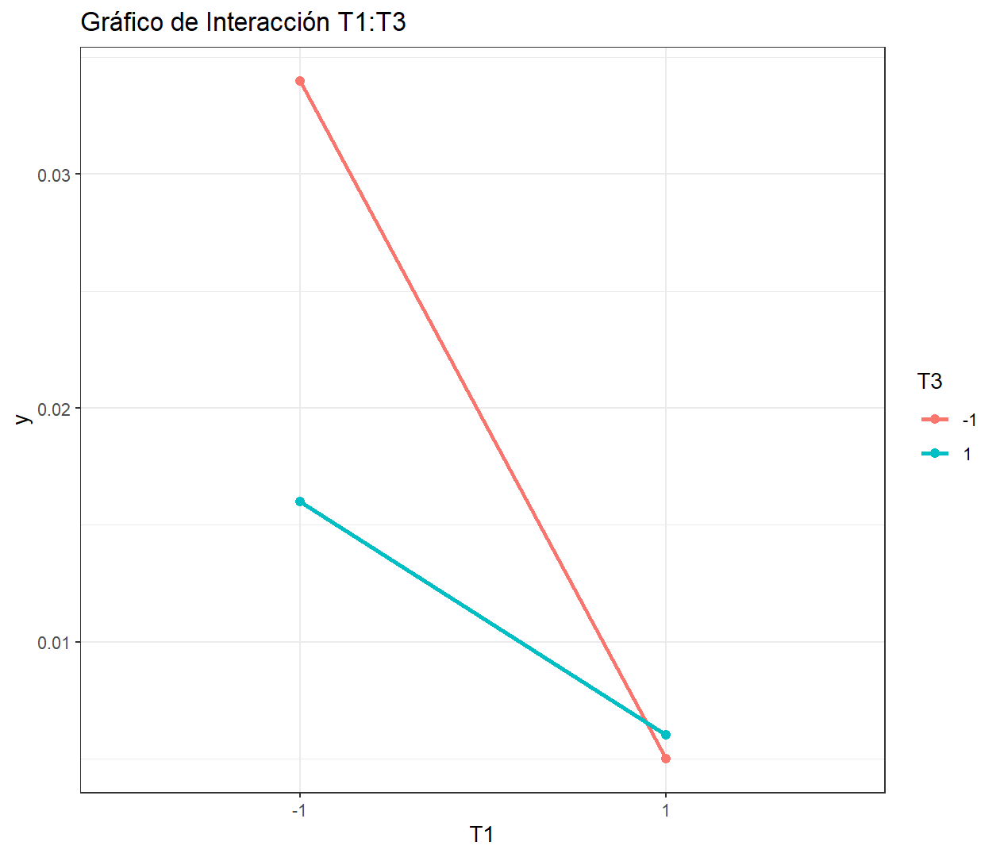
datos %>% group_by(T2,T3) %>%
summarise(y = mean(resp)) %>%
ggplot(aes(x=T2,y=y,
group=T3,colour=T3))+
geom_point(size=2)+geom_line(lwd=1)+
ggtitle("Gráfico de Interacción T2:T3")+theme_bw()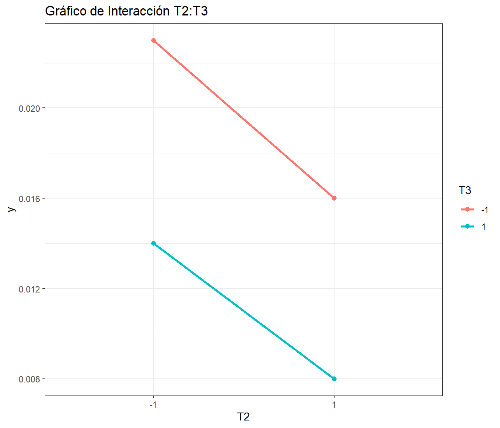
datos %>% group_by(T1,T2,T3) %>%
summarise(y = mean(resp)) %>%
ggplot(aes(x=T1,y=y,
group=T3,colour=T3))+
geom_point(size=2)+geom_line(lwd=1)+
ggtitle("Gráfico de Interacción T1:T2:T3")+theme_bw()+facet_wrap(~T2)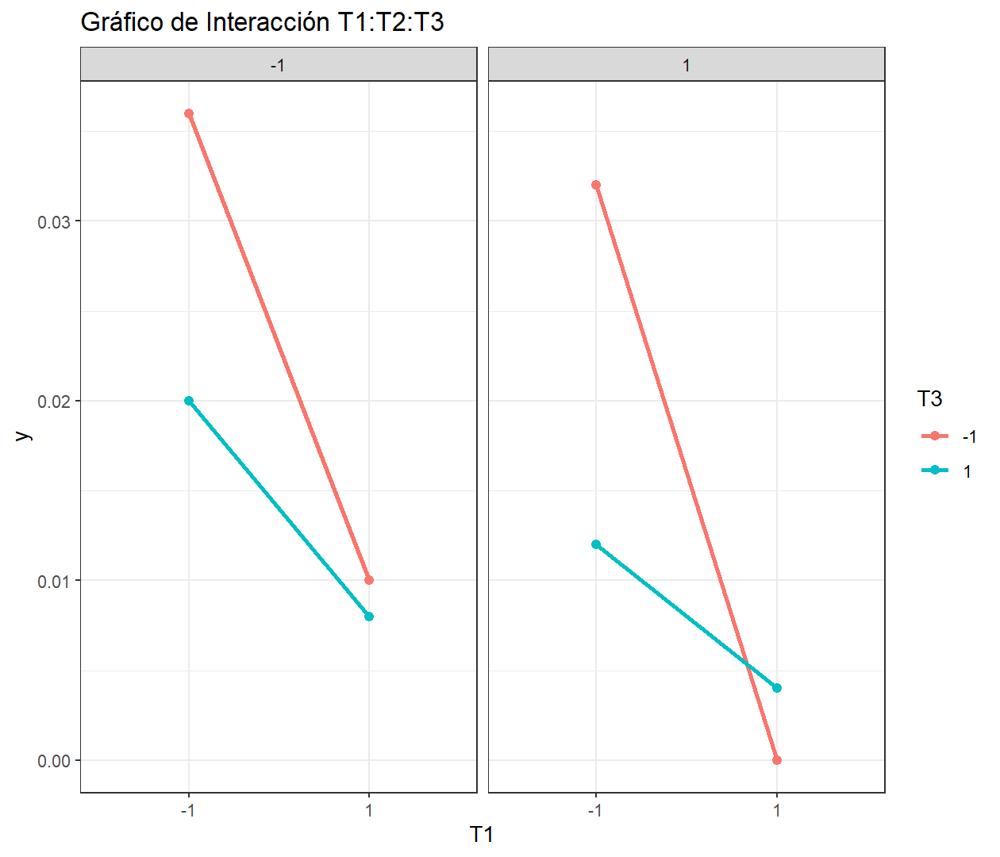
Luego se construye el modelo con el comando aov dando como argumentos la fórmula, después se ejecuta el comando anova para construir la tabla e interpretar. El modelo también se puede ajustar con el comando lm.
## Analysis of Variance Table
##
## Response: resp
## Df Sum Sq Mean Sq F value Pr(>F)
## T1 1 0.001521 0.001521 52.4483 8.873e-05 ***
## T2 1 0.000169 0.000169 5.8276 0.042241 *
## T3 1 0.000289 0.000289 9.9655 0.013459 *
## T1:T2 1 0.000001 0.000001 0.0345 0.857306
## T1:T3 1 0.000361 0.000361 12.4483 0.007752 **
## T2:T3 1 0.000001 0.000001 0.0345 0.857306
## T1:T2:T3 1 0.000025 0.000025 0.8621 0.380322
## Residuals 8 0.000232 0.000029
## ---
## Signif. codes: 0 '***' 0.001 '**' 0.01 '*' 0.05 '.' 0.1 ' ' 1
## Analysis of Variance Table
##
## Response: resp
## Df Sum Sq Mean Sq F value Pr(>F)
## T1 1 0.001521 1.521e-03 53.2646 4.573e-05 ***
## T2 1 0.000169 1.690e-04 5.9183 0.037811 *
## T3 1 0.000289 2.890e-04 10.1206 0.011162 *
## T1:T2 1 0.000001 1.000e-06 0.0350 0.855706
## T1:T3 1 0.000361 3.610e-04 12.6420 0.006162 **
## T2:T3 1 0.000001 1.000e-06 0.0350 0.855706
## Residuals 9 0.000257 2.856e-05
## ---
## Signif. codes: 0 '***' 0.001 '**' 0.01 '*' 0.05 '.' 0.1 ' ' 1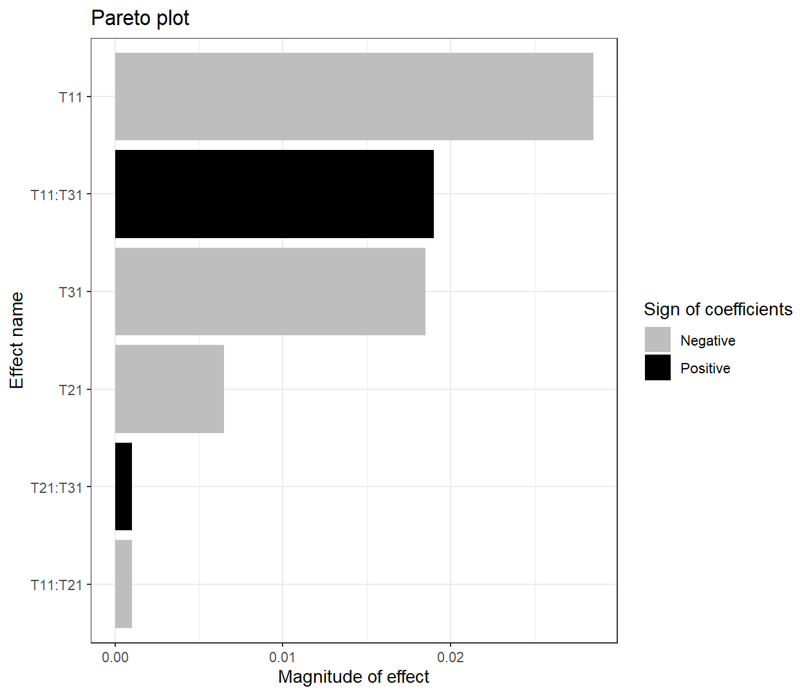
## Analysis of Variance Table
##
## Response: resp
## Df Sum Sq Mean Sq F value Pr(>F)
## T1 1 0.001521 0.0015210 58.9535 1.684e-05 ***
## T2 1 0.000169 0.0001690 6.5504 0.028404 *
## T3 1 0.000289 0.0002890 11.2016 0.007404 **
## T1:T3 1 0.000361 0.0003610 13.9922 0.003843 **
## T2:T3 1 0.000001 0.0000010 0.0388 0.847869
## Residuals 10 0.000258 0.0000258
## ---
## Signif. codes: 0 '***' 0.001 '**' 0.01 '*' 0.05 '.' 0.1 ' ' 1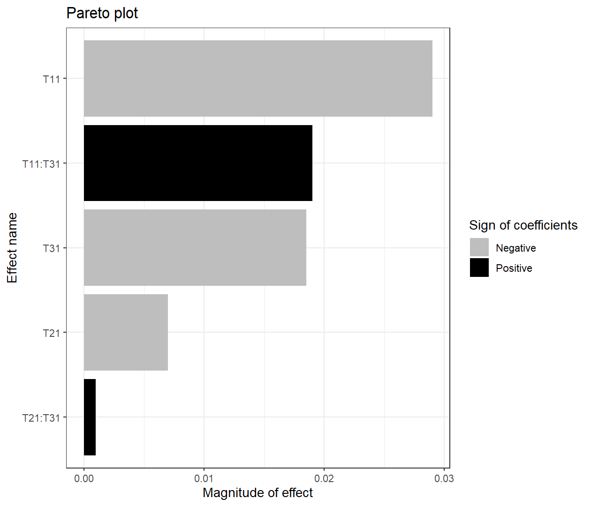
## Analysis of Variance Table
##
## Response: resp
## Df Sum Sq Mean Sq F value Pr(>F)
## T1 1 0.001521 1.521e-03 64.5985 6.249e-06 ***
## T2 1 0.000169 1.690e-04 7.1776 0.021442 *
## T3 1 0.000289 2.890e-04 12.2741 0.004940 **
## T1:T3 1 0.000361 3.610e-04 15.3320 0.002411 **
## Residuals 11 0.000259 2.355e-05
## ---
## Signif. codes: 0 '***' 0.001 '**' 0.01 '*' 0.05 '.' 0.1 ' ' 1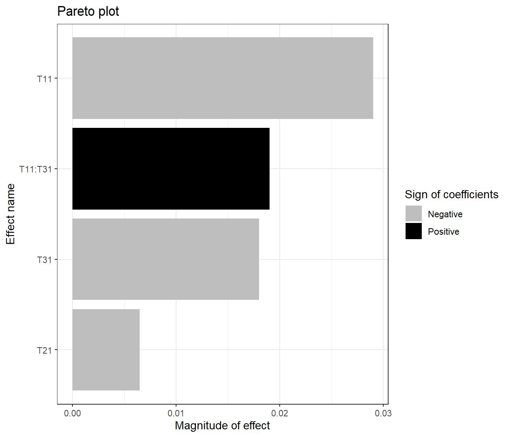
Supuestos del modelo
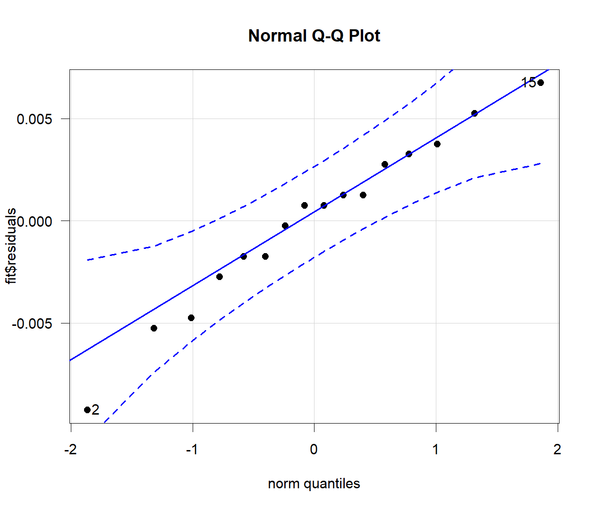
## [1] 2 15##
## Shapiro-Wilk normality test
##
## data: fit$residuals
## W = 0.97513, p-value = 0.9133##
## Anderson-Darling normality test
##
## data: fit$residuals
## A = 0.19906, p-value = 0.8608##
## Lilliefors (Kolmogorov-Smirnov) normality test
##
## data: fit$residuals
## D = 0.13412, p-value = 0.618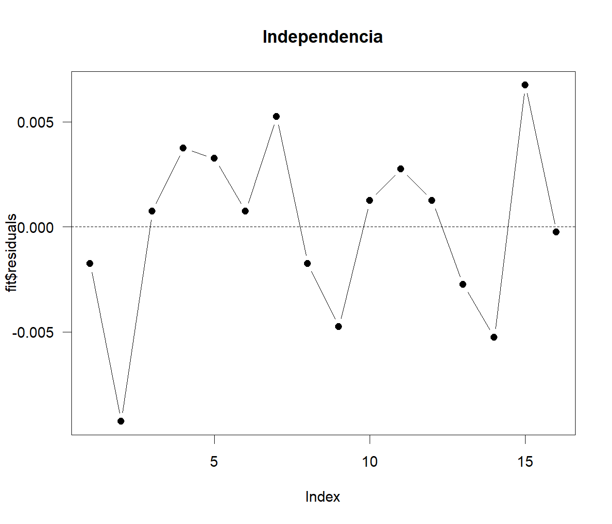
## lag Autocorrelation D-W Statistic p-value
## 1 0.01761583 1.952703 0.972
## Alternative hypothesis: rho != 0# Homocedasticidad
plot(predict(fit),fit$residuals,pch=19,las=1,
main="Homogeneidad de Varianza",
xlab="Valores Predictivos",ylab="Residuales")
abline(h=0,lty=2,col=2)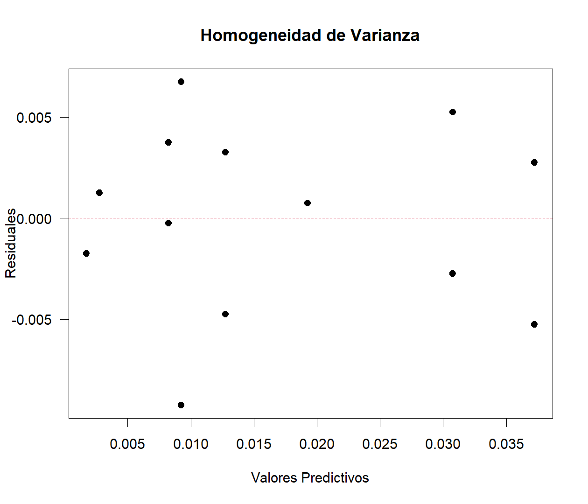
##
## Bartlett test of homogeneity of variances
##
## data: fit$residuals and datos$T1
## Bartlett's K-squared = 0.24814, df = 1, p-value = 0.6184##
## Bartlett test of homogeneity of variances
##
## data: fit$residuals and datos$T2
## Bartlett's K-squared = 1.1487, df = 1, p-value = 0.2838##
## Bartlett test of homogeneity of variances
##
## data: fit$residuals and datos$T3
## Bartlett's K-squared = 0.62116, df = 1, p-value = 0.4306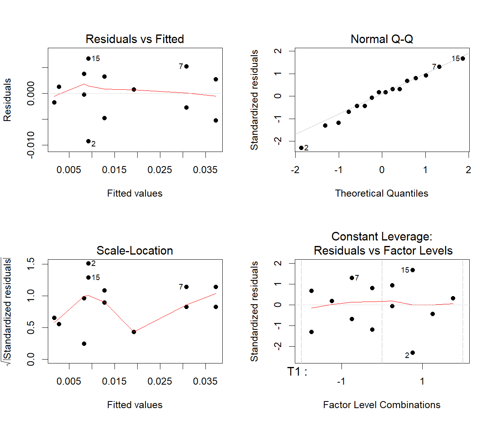
Finalmente, como los supuestos del modelo se cumplen, entonces podemos buscar cuáles son los tratamientos más significativos sobre los acabados del metal mediante las pruebas post-hoc.
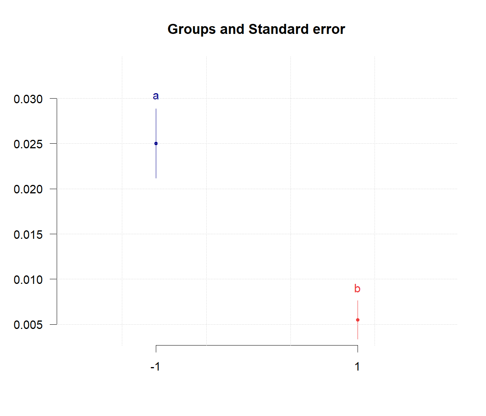
##
## Study: fit ~ "T1"
##
## LSD t Test for resp
##
## Mean Square Error: 2.354545e-05
##
## T1, means and individual ( 95 %) CI
##
## resp std r LCL UCL Min Max
## -1 0.0250 0.010849621 8 0.021224055 0.028775945 0.008 0.040
## 1 0.0055 0.006023762 8 0.001724055 0.009275945 0.000 0.016
##
## Alpha: 0.05 ; DF Error: 11
## Critical Value of t: 2.200985
##
## Comparison between treatments means
##
## difference pvalue signif. LCL UCL
## -1 - 1 0.0195 0 *** 0.01416001 0.02483999
##
## Study: fit ~ "T2"
##
## LSD t Test for resp
##
## Mean Square Error: 2.354545e-05
##
## T2, means and individual ( 95 %) CI
##
## resp std r LCL UCL Min Max
## -1 0.0185 0.01281740 8 0.014724055 0.02227595 0 0.040
## 1 0.0120 0.01352247 8 0.008224055 0.01577595 0 0.036
##
## Alpha: 0.05 ; DF Error: 11
## Critical Value of t: 2.200985
##
## Comparison between treatments means
##
## difference pvalue signif. LCL UCL
## -1 - 1 0.0065 0.0214 * 0.001160007 0.01183999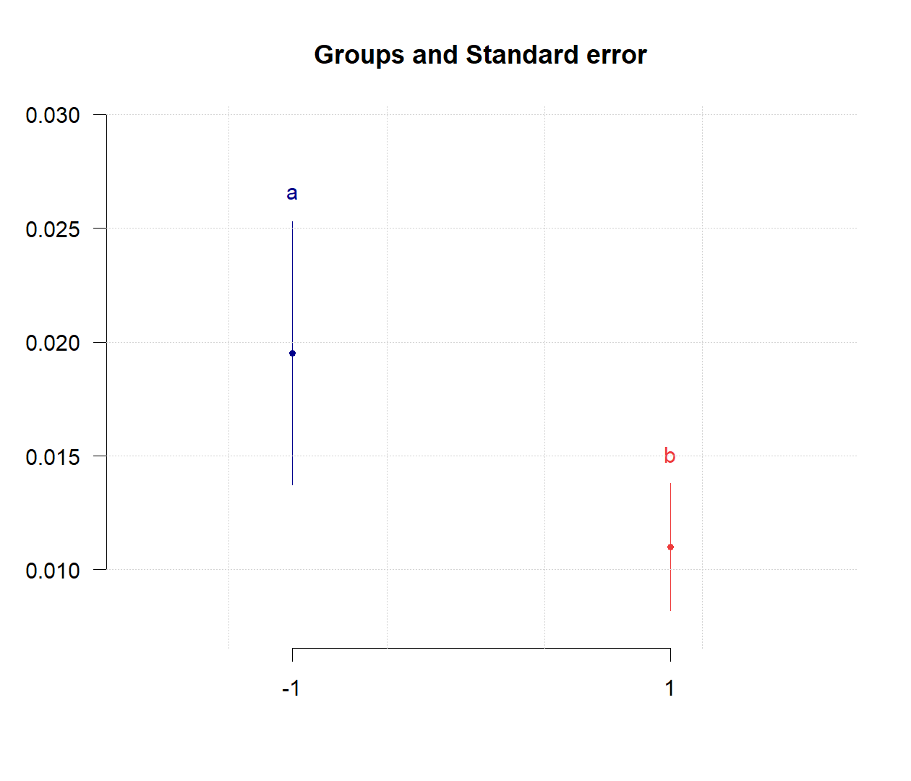
##
## Study: fit ~ "T3"
##
## LSD t Test for resp
##
## Mean Square Error: 2.354545e-05
##
## T3, means and individual ( 95 %) CI
##
## resp std r LCL UCL Min Max
## -1 0.0195 0.01634451 8 0.015724055 0.02327595 0 0.04
## 1 0.0110 0.00792825 8 0.007224055 0.01477595 0 0.02
##
## Alpha: 0.05 ; DF Error: 11
## Critical Value of t: 2.200985
##
## Comparison between treatments means
##
## difference pvalue signif. LCL UCL
## -1 - 1 0.0085 0.0049 ** 0.003160007 0.01383999## Tukey multiple comparisons of means
## 95% family-wise confidence level
##
## Fit: aov.default(formula = resp ~ T1 + T2 + T3 + T1:T3, data = datos)
##
## $T1
## diff lwr upr p adj
## 1--1 -0.0195 -0.02483999 -0.01416001 6.2e-06
##
## $T2
## diff lwr upr p adj
## 1--1 -0.0065 -0.01183999 -0.001160007 0.0214424
##
## $T3
## diff lwr upr p adj
## 1--1 -0.0085 -0.01383999 -0.003160007 0.0049402
##
## $`T1:T3`
## diff lwr upr p adj
## 1:-1--1:-1 -0.029 -0.0393261824 -0.0186738176 0.0000196
## -1:1--1:-1 -0.018 -0.0283261824 -0.0076738176 0.0013295
## 1:1--1:-1 -0.028 -0.0383261824 -0.0176738176 0.0000274
## -1:1-1:-1 0.011 0.0006738176 0.0213261824 0.0360328
## 1:1-1:-1 0.001 -0.0093261824 0.0113261824 0.9908914
## 1:1--1:1 -0.010 -0.0203261824 0.0003261824 0.0585400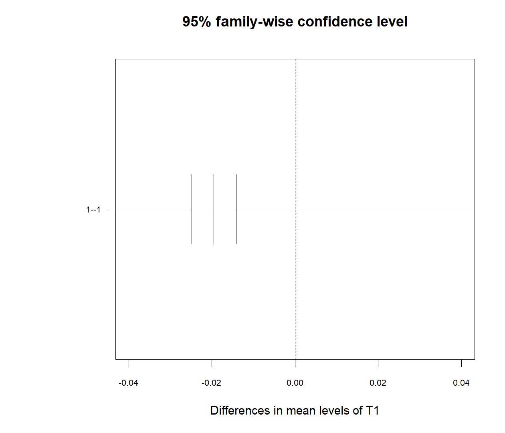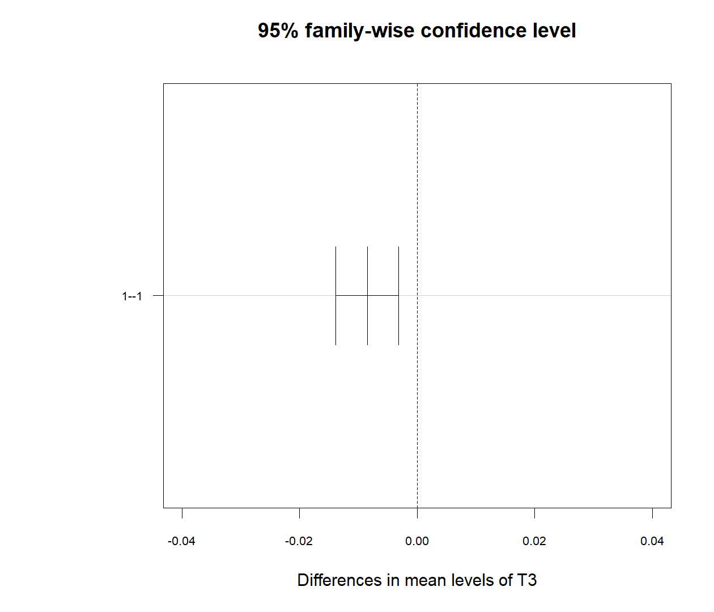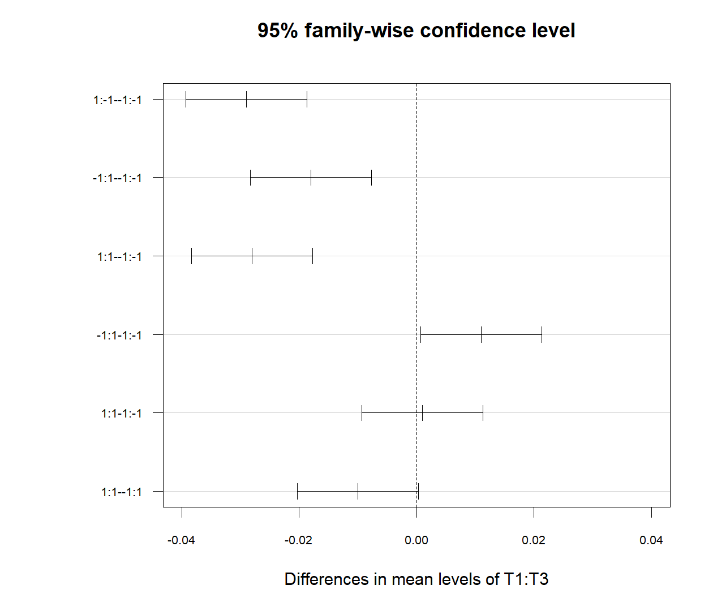
##
## Study: fit ~ "T1"
##
## Duncan's new multiple range test
## for resp
##
## Mean Square Error: 2.354545e-05
##
## T1, means
##
## resp std r Min Max
## -1 0.0250 0.010849621 8 0.008 0.040
## 1 0.0055 0.006023762 8 0.000 0.016
##
## Comparison between treatments means
##
## difference pvalue signif. LCL UCL
## -1 - 1 0.0195 0 *** 0.01416001 0.02483999##
## Study: fit ~ "T2"
##
## Duncan's new multiple range test
## for resp
##
## Mean Square Error: 2.354545e-05
##
## T2, means
##
## resp std r Min Max
## -1 0.0185 0.01281740 8 0 0.040
## 1 0.0120 0.01352247 8 0 0.036
##
## Comparison between treatments means
##
## difference pvalue signif. LCL UCL
## -1 - 1 0.0065 0.0214 * 0.001160007 0.01183999##
## Study: fit ~ "T3"
##
## Duncan's new multiple range test
## for resp
##
## Mean Square Error: 2.354545e-05
##
## T3, means
##
## resp std r Min Max
## -1 0.0195 0.01634451 8 0 0.04
## 1 0.0110 0.00792825 8 0 0.02
##
## Comparison between treatments means
##
## difference pvalue signif. LCL UCL
## -1 - 1 0.0085 0.0049 ** 0.003160007 0.01383999Interacciones
## T1 T2 T3 adjusted mean std. error
## 1 -1 -1 -1 0.03725 0.002712555
## 2 1 -1 -1 0.00825 0.002712555
## 3 -1 1 -1 0.03075 0.002712555
## 4 1 1 -1 0.00175 0.002712555
## 5 -1 -1 1 0.01925 0.002712555
## 6 1 -1 1 0.00925 0.002712555
## 7 -1 1 1 0.01275 0.002712555
## 8 1 1 1 0.00275 0.002712555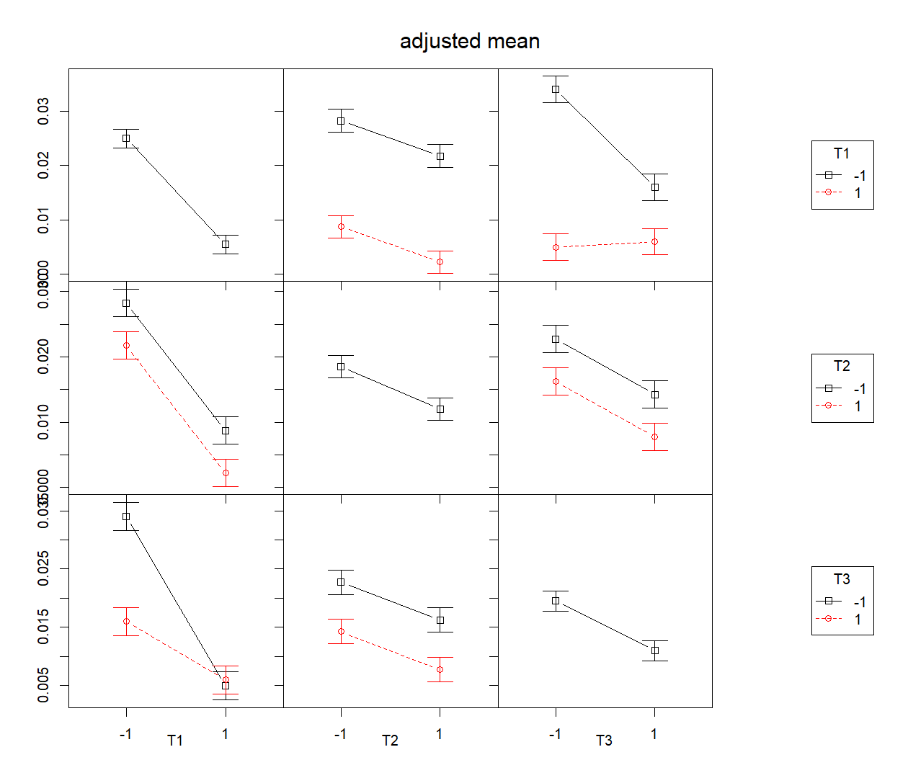
Cubo de respuesta predicha

Usando lm para estimar el coeficiente de determinación \(R^2\) el cual es útil para medir la calidad global del modelo de regresión múltiple, se puede obtener del ANOVA de la siguiente forma:
\[R^2=\frac{SS_T-SSE}{SS_T}\] \[R_{aj}^2=\frac{MS_T-MSE}{MS_T}\]
##
## Call:
## lm.default(formula = resp ~ T1 + T2 + T3 + T1:T3, data = datos)
##
## Residuals:
## Min 1Q Median 3Q Max
## -0.009250 -0.002000 0.000750 0.002875 0.006750
##
## Coefficients:
## Estimate Std. Error t value Pr(>|t|)
## (Intercept) 0.037250 0.002713 13.732 2.88e-08 ***
## T11 -0.029000 0.003431 -8.452 3.86e-06 ***
## T21 -0.006500 0.002426 -2.679 0.021442 *
## T31 -0.018000 0.003431 -5.246 0.000274 ***
## T11:T31 0.019000 0.004852 3.916 0.002411 **
## ---
## Signif. codes: 0 '***' 0.001 '**' 0.01 '*' 0.05 '.' 0.1 ' ' 1
##
## Residual standard error: 0.004852 on 11 degrees of freedom
## Multiple R-squared: 0.9003, Adjusted R-squared: 0.8641
## F-statistic: 24.85 on 4 and 11 DF, p-value: 1.847e-05## Analysis of Variance Table
##
## Response: resp
## Df Sum Sq Mean Sq F value Pr(>F)
## T1 1 0.001521 1.521e-03 64.5985 6.249e-06 ***
## T2 1 0.000169 1.690e-04 7.1776 0.021442 *
## T3 1 0.000289 2.890e-04 12.2741 0.004940 **
## T1:T3 1 0.000361 3.610e-04 15.3320 0.002411 **
## Residuals 11 0.000259 2.355e-05
## ---
## Signif. codes: 0 '***' 0.001 '**' 0.01 '*' 0.05 '.' 0.1 ' ' 1